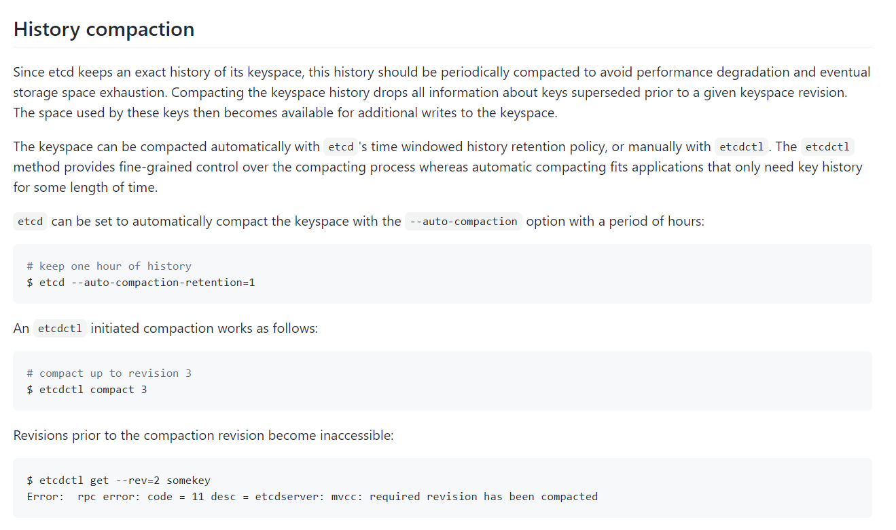
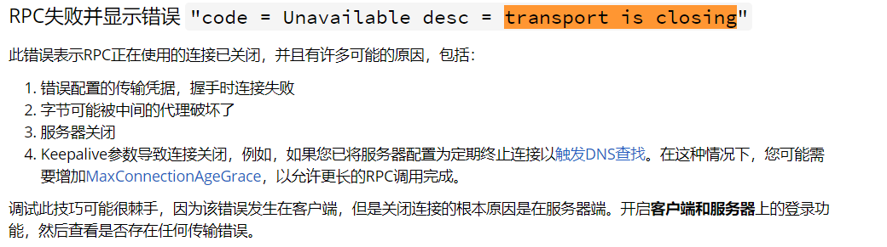
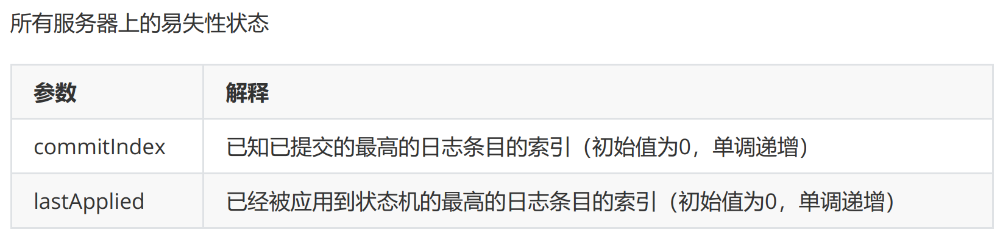
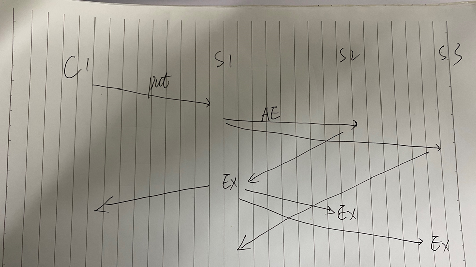

etcd中一致性读的一些理解
etcd中有着和Mysql类似的多版本并发控制（MVCC），同样都是为了解决对高并发环境下数据冲突的问题。
本来准备研究一下MVCC的，不过这里有一篇博客讲比较好，我就不献丑了。
压缩
根据博文中所述，版本信息revision，以及keyindex，在默认不压缩的情况下，它会一直存在，那它什么时候被压缩呢？
在链接，https://alexstocks.github.io/html/etcd.html中，有介绍到启动etcd的参数：auto-compaction-retention；
etcd 底层使用的 coreos/bbolt 类似于 rocksdb 会定期做 compaction 以清除过期数据，上面的 auto-compaction-retention 指定的时间单位是小时，当然也可以借助工具 etcdctl 强行进行 compaction，使用方法详见参考文档9#History compaction#一节；

auto-compaction-retention，但依然没说其默认值是多少。
根据这个参数，在ETCD代码中对应：go.etcd.io/etcd/server/config/config.go；go.etcd.io/etcd/server/embed/config.go；
根据注释：前者是从命令行或discovery获取的etcd的配置；后者是从配置文件中获取的配置；
1 | type ServerConfig struct{ |
其默认是不压缩的，也就是版本将一直保存。
而一旦被压缩，之前的版本想要查询，或者watch都是找不到的。
线性一致性读
这里有一个场景，当client去读x参数时，请求已经到了服务器，正当服务器去返回数据时，服务器挂了，过了一会，服务端重启了，x被写入了2，客户端重试读时，应该读到的值为多少？
此处应该为1。这是在MIT的一个课程上的讲解。（实际返回数据的多少还是得根据实际系统设计来）
这里我无法在etcd中复现此现象，对实际的代码我其实是没啥头绪的，我简单的验证了一下，并发在A client发起大量的读key A请求，然后断网，程序会打印：
1 | {"level":"warn","ts":"2021-04-12T15:22:36.710+0800","caller":"clientv3/retry_interceptor.go:62","msg":"retrying of unary invoker failed","target":"endpoint://client-b7e5c3f7-28ef-4b78-b36e-899f9817c1b0/xxxx.xxxxx.com:2379","attempt":0,"error":"rpc error: code = Unavailable desc = transport is closing"} |
此错误的一些解释：

跟踪代码，发现其实请求并没有到达服务端，加入代码的一些打印并没有打印。
所以我这里的test不能验证这个问题，按照我对MVCC的理解：在查询一条记录的时候，不同时刻启动的事务会有不同的read-view。显然在我想不出好的测试方法时，我应该时需要去查看下实际代码。
不得已之下，只能搜索看看前人对etcd一致性读的分析，发现一篇讲解的比较详细的博客：etcd 中线性一致性读的具体实现。
1 | func (s *EtcdServer) Range(ctx context.Context, r *pb.RangeRequest) (*pb.RangeResponse, error) { |
在linearizableReadLoop中，我发现reqID是针对于每个请求都会生成新的，那也就是说，即使是重复请求，但也不会是将之前的数据给到你，根据线性一致性读的认知，当存储系统已将写操作提交成功，那此时读出的数据应是最新的数据（假设这期间没有新的写操作），貌似很合理。
因为这里的reqID是自动生成的，leader也会同步这个参数，但每次请求都会不一样的情况，即使有之前的请求，按照代码：
1 | select { |
也会将其丢弃掉。
ReadIndex 算法理解
要想实现线性一致性读，一个较为简单通用的策略就是：每次读操作的时候记录此时集群的 commited index，当状态机的 apply index 大于或等于 commited index 时才读取数据并返回。由于此时状态机已经把读请求发起时的已提交日志进行了 apply 动作，所以此时状态机的状态就可以反应读请求发起时的状态，符合线性一致性读的要求。这便是 ReadIndex 算法。
首先，我们需要明白apply index和commited index这些名词的具体含义是什么？
在Raft的论文中，是这么介绍的：

再通俗一点的解释是什么呢？
commitindex指的是已经被大多数节点保存的日志的位置；lastapplyindex是这些被应用到状态机（KV存储）的日志的位置。只有日志被大多数节点commit之后，commitindex才会被更新，之后才可以被apply。
读的时候，记录下此刻的Commit Index作为Read Index，然后一直阻塞等到apply index >= read index时，才允许去读取数据。

AppendLogEntry超过半数节点，则Leader进行提交（commit），并返回操作结果EX给client。
Leader再异步的将commitindex发送给其他Follower节点。
即当状态机的 apply index 大于或等于 commited index 时才读取数据并返回，就是为了保证，当前集群中，此刻查询到的提交的操作记录，已被应用到集群中，稳定的落地，安全可靠。
本文标题：etcd中一致性读的一些理解
文章作者：小师
发布时间：2021-04-12
最后更新：2022-05-04
原始链接：chunlife.top/2021/04/12/etcd中一致性读的一些理解/
版权声明：本站所有文章均采用知识共享署名4.0国际许可协议进行许可